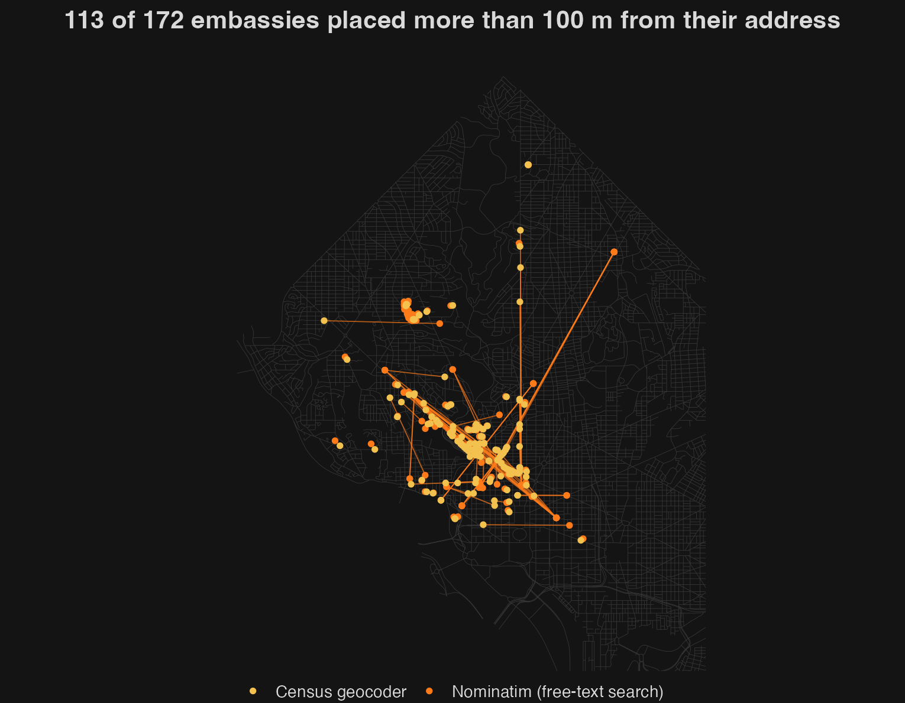
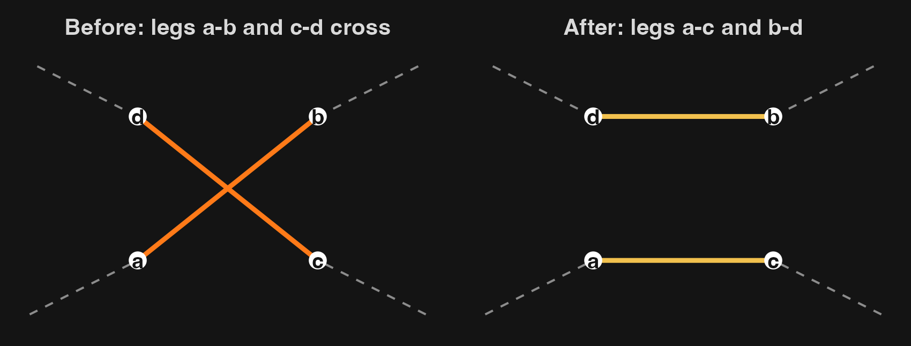

Geocoding and the traveling salesman problem
Two GIS problems:
Geocoding matches a text address to a location, usually by interpolating along a street segment’s address range.
| Geocoder | Coverage | Good for |
|---|---|---|
| U.S. Census Geocoder | U.S. | Free, no account, 10,000 addresses per upload |
| Nominatim (OpenStreetMap) | World | Free; one request per second; best with structured fields |
| DC Master Address Repository | D.C. | Authoritative D.C. addresses |
| Google, Esri | World | Accurate, but paid and licence-restricted |

id, street, city, state, zipstreet, city and state as separate fieldsRule of thumb: geocoding is never finished until you have looked at the points on a map.
Roadway_Block · Points: embassies (from and to) · ID field: embassyVisit every stop once and return home, by the shortest route.
\[ number \: of \: possible \: routes = \frac{(n − 1)!}{2} \]
| Stops | Possible tours |
|---|---|
| 5 | 12 |
| 10 | 181,440 |
| 20 | 6 × 1016 |
| 173 | 10311 |
Always walk to the closest embassy you have not visited yet.
route = [START]
while len(not_visited) > 0:
here = route[-1] # where we are now
closest = None
for embassy in not_visited: # find the closest unvisited embassy
if closest is None or distance[(here, embassy)] < distance[(here, closest)]:
closest = embassy
route.append(closest) # walk there
not_visited.remove(closest) # and cross it off
improved = True
while improved:
improved = False
for i in range(1, len(route) - 2):
for j in range(i + 1, len(route) - 1):
A, B = route[i - 1], route[i]
C, D = route[j], route[j + 1]
if distance[(A, C)] + distance[(B, D)] < distance[(A, B)] + distance[(C, D)]:
middle = route[i:j + 1] # the piece B ... C
middle.reverse() # now C ... B
route = route[:i] + middle + route[j + 1:]
improved = TrueScripts: nearest_neighbor_simple.py and two_opt_simple.py. Click the OD table in the Layers panel, then Plugins ▸ Python Console ▸ Show Editor ▸ open ▸ Run.
embassy_addresses.csv with the Census batch geocoder; load it in QGIS; inspect and fix the non-exact matchesRoadway_Block to EPSG:26985nearest_neighbor_simple.py, then two_opt_simple.py, with the OD table selectedembassy_order (or embassy_order_2opt) to the embassies (Join Attributes by Field Value), then Processing ▸ Points to Path, ordered by visit_orderSTART in the script. Does the 2-opt route length depend on where you begin?Environmental GIS · Halloween Spooktacular